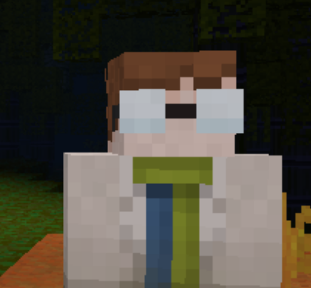

I'm excited to showcase some of the awesome projects I've worked on as an IT professional. From building mobile apps to managing servers and creating and managing bots, I've had the pleasure of working on a wide range of projects. Each of these projects has been a unique challenge, and I've learned so much along the way. I've also explored fascinating areas such as AI research and blockchain technology, using machine learning and data analysis techniques to help communities thrive. As a software development specialist, I'm particularly interested in testing and QA, and I've honed my skills in this area by working on complex projects that required rigorous testing and attention to detail. Whether you're looking for a new project partner or simply want to learn more about my skills and experience, please don't hesitate to contact me. I'm always up for taking on new challenges and creating something amazing together.

This is a user-friendly web player that allows you to listen to your favorite music with just one click.
It's an ongoing development project that has presented several challenges during its creation.
Despite being still in development, it already offers a variety of popular radio stations from around the
world, with no need to search. Whether you're into Pop, Rock, Hip-hop, EDM, R&B, Country, Reggaeton, Rap,
Latin, Alternative/Indie, and even podcasts, the player has 16 carefully selected stations to cover all
musical preferences and interests.
The simple interface makes it easy to find the perfect station to suit your mood, whether you're looking for
relaxing background music or upbeat party music. It's important to note that some stations may not be
available in certain regions or countries.
With its wide variety of station options and easy-to-use interface, Kristovish Media Player is the ultimate
solution for music lovers looking for a hassle-free listening experience.
Moonlight Falls is an exceptional Minetest server that provides an unparalleled gaming experience. As both
the server's administrator and programmer, I am dedicated to ensuring everything runs smoothly and
seamlessly, even when faced with the daily challenges of debugging and error-fixing.
Moonlight Falls is an open-source project that is completely free to play, offering a captivating and
magical world brimming with mythical creatures and ethereal biomes. As the server's administrator and
programmer, my responsibilities extend beyond just maintaining its stability. I constantly strive to
create and implement new features that enhance the gaming experience and ensure that players always have
something new to discover.
As a skilled freelance developer, I take pride in my work, and Moonlight Falls is a testament to my
commitment to delivering high-quality gaming experiences. In addition, working on this project has helped
me to develop my skills in QA practices and improve the overall user experience.
My Discord bots, which include Astral Assistant, Roxanne, and Night Helper, have become valuable assets to
the Minetest community on Discord. These bots offer advanced functionality and user-friendly design, making
them essential tools for users.
Night Helper is a chatbot prototype humanoid assistant powered by cutting-edge AI technology that
incorporates the use of Markov chains to generate natural-sounding responses. This bot also has chatbot-like
capabilities, allowing it to provide automatic replies based on specific topics. Although still in its early
stages, Night Helper has already demonstrated promising results with its advanced functionality and
user-friendly interface.
I am proud to have developed these bots that help to improve the overall experience for users on Discord. As
a developer, I am dedicated to continuing to innovate and improve these bots to meet the ever-changing needs
of the community.
As a web developer, QA tester, and IT professional, I have a diverse range of skills and experience. My portfolio showcases my expertise in creating user-friendly and visually appealing websites, my attention to detail in testing and quality assurance, and my problem-solving skills in IT. I am always eager to take on new challenges and expand my knowledge, and I'm dedicated to providing high-quality work to all of my clients.
The items listed within the collapsed container of "My Professional Journey's Showcase" represent a collection of resources that I have studied and often refer to in my professional journey. These resources include not only books, but also e-books, online documents, and GitHub repositories, all of which have helped me to expand my knowledge and improve my skills in various areas of expertise.